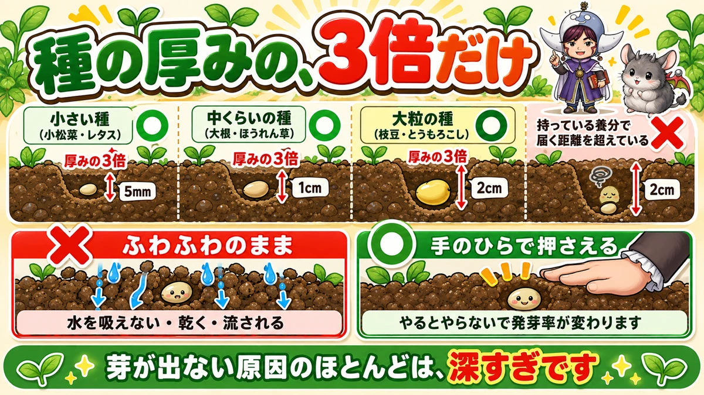
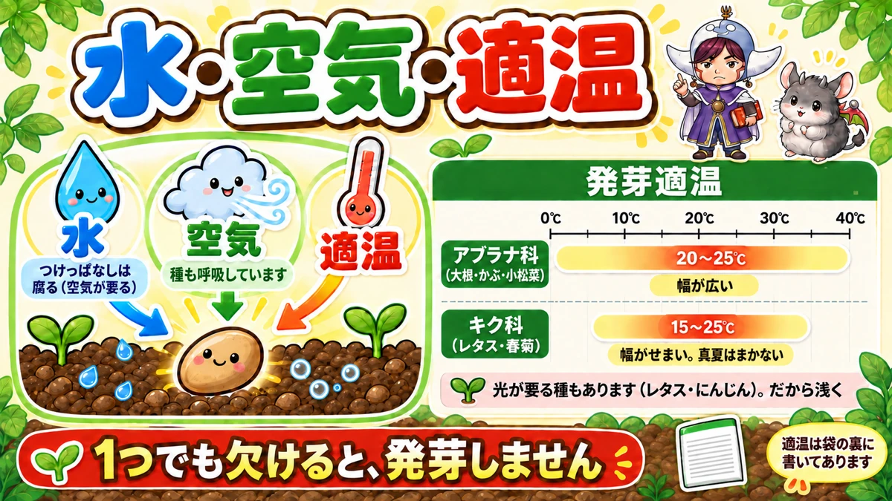
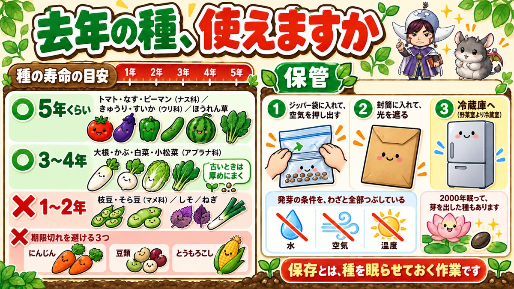

タネは、大きさの3倍だけ土をかけます🌱 深いと出てきません

🌱「まいたのに、半分も出てこない」
🌱「出たところがバラバラで、そろわない」
🌱「去年の余った種、使っていいのか分からない」
どうも、8150（えいこう）です🌱 家庭菜園歴8年、理科の教員免許を持っていて、有機・無農薬で野菜を育てています。
前回は連作障害の話でした。今日はタネまきです。
これまで野菜ごとに書いてきましたが、どの野菜にも共通する基本を、一度まとめておきます。
先に、この記事でいちばん言いたいことを言っておきますね。
かける土は、種の大きさの3倍です。
そして芽が出ない原因のほとんどは、深すぎることです🌱
深さは、種の大きさで決めます

かける土は、3倍
覚え方は簡単です。
種の厚みの、3倍だけ土をかける。
これだけです。定規で測る必要はありません。種を見て「これの3つぶん」と思えば十分です。
具体的な目安
数字にすると、こうなります。
- 小さい種（小松菜・水菜・レタスなど）… 5mm程度
- 中くらいの種（大根・かぶ・ほうれん草）… 1cm程度
- 大粒の種（枝豆・そら豆・とうもろこし）… 2cm程度
大粒の種は、浅すぎるとぐらつきます。しっかり埋めてください。
深いと、なぜ出てこないのか
ここが大事なところです。
種は、自分の中に持っている養分だけで地上に出ます。
土を押しのけて、光の当たる場所まで。その距離が長すぎると、途中で力尽きます。
小さい種ほど、持っている養分が少ないです。だから小さい種ほど浅く、なんですね。
私の失敗
はじめた年、私はにんじんの種を1cm以上埋めました。
「小さいから流されそう」と思ったんです。
結果、1列ぜんぶ芽が出ませんでした。にんじんは特に浅くていい種でした😅
まいたら、押さえてください
ふわっとかけて、終わりにしない
土をかけたあと、必ずやることがあります。
手のひらで、上から軽く押さえる。
これを鎮圧（ちんあつ）といいます。地味ですが、やるとやらないで発芽率が変わります。
押さえないと、こうなります
土がふわふわのままだと、こうなります。
- 種と土が接していないので、水を吸えない
- 隙間から乾いていく
- 水やりや雨で、種が流される
- 出た根が、空気の隙間で止まる
「まいたのに出ない」の原因は、深さか、これのどちらかです。
力加減
強く踏む必要はありません。手のひらで、上からポンポンと押さえる程度です。
プランターなら、板や手の甲で平らにならすだけで十分です。
押さえたら、不織布をかけます
まいたうねに、不織布をふわっとかぶせる（ベタがけといいます）。これだけで3つ効きます。
- 土が乾かない
- 大雨で種が流れない
- 出たばかりの柔らかい芽を、虫に食べられない
芽が出ても、外さないでください
いちばん間違えやすいのがここです。発芽したら役目が終わり、ではありません。
- 発芽したら、ベタがけから不織布のトンネルに切り替える
- そのまま冬まで使う
- もっと冷えてきたら、その上からビニールをかける
農業用の不織布は、思ったより光を通します。日照不足の心配はほとんどありません。
ただし100円ショップのものは、すぐボロボロになります。ホームセンターのものを買ってください。
発芽に要るのは、3つだけ

水・空気・温度
種が芽を出すのに要るのは、この3つです。
- 水 … 種が吸って、動きだします
- 空気 … 種も呼吸しています
- 適温 … 種類ごとに決まった温度があります
1つでも欠けると、発芽しません。
水は、多すぎてもだめ
意外と知られていないのが、これです。
水につけっぱなしにすると、腐ります。
空気が要るからです。じめじめではなく、しっとり。これが正解です。
温度は、種類で違います
ここが見落とされがちです。
- アブラナ科（大根・かぶ・小松菜）… 20〜25℃くらい。幅が広く、暑さにも強い
- キク科（レタス・春菊）… 15〜25℃くらい。幅がせまい
レタスを真夏にまいても出ないのは、これが理由です。
種袋の裏に必ず書いてあります。買ったら、まず裏を見てください。
光が要る種もあります
もうひとつ。光が当たらないと出にくい種があります。
レタスやにんじんがそうです。だから浅くまく、という話にもつながります。
深く埋める＝暗くする、でもあるわけですね。
芽が出ない、4つの原因
❶ 深すぎる
いちばん多い原因です。ここまでの話のとおりです。
❷ 押さえていない
2番目に多い原因です。これもここまでのとおりです。
❸ 肥料を入れた直後にまいた
これは見落とされます。
化成肥料を入れた直後にまくと、芽が出ても育ちません。
肥料の濃度が濃すぎて、根が水を吸えなくなるからです。使う方は、1週間あけてください。
未熟な有機物も要注意です。分解するときに熱とガスが出て、種が傷みます。
私は元肥を入れてから、最低2週間はあけるようにしています。
❹ 時期がずれている
成功率が高いのは、3〜4月と9〜10月です。
真夏や真冬でも芽は出ますが、そのあとの育ちが難しくなります。
「なんとなく育たない」ときは、腕ではなく時期のことが多いです。
去年の種、使えますか

科によって、まったく違います
余った種を捨てるかどうか。答えは科によります。
- 長持ちする（5年くらい）… トマト・なす・ピーマン（ナス科）、きゅうり・すいか（ウリ科）、ほうれん草
- そこそこ（3〜4年）… 大根・かぶ・白菜・小松菜（アブラナ科）
- 短い（1〜2年）… 枝豆・いんげん・そら豆（マメ科）、しそ、ねぎ
期限切れを使わないほうがいいもの
はっきり避けたほうがいいのは、この3つです。
- にんじん … 発芽率が落ちるうえ、根が二股になることがあります
- 豆類 … 発芽率が極端に落ちます
- とうもろこし … 同じく落ちます
一列まいて全滅すると、1か月を無駄にします。ここは新しい種を買ってください。
逆に、使いまわせるもの
アブラナ科は、少し古くても使えます。
発芽率が落ちるぶん、いつもより厚めにまいてください。出すぎたら間引けば済みます。
ナス科・ウリ科も長持ちします。数粒しか使わない野菜なので、これは助かりますね。
保管は、冷蔵庫
置き場所で寿命が変わります。私はこうしています。
- ジッパー付きの袋に入れて、空気を押し出す
- 封筒に入れて、光を遮る
- 冷蔵庫へ（野菜室より、冷蔵室のほうが向いています）
引き出しに入れっぱなしにしていたころと比べて、次の年の出方が明らかに違いました。
学ぶ：種は、眠って待っています🔬
種の中身は、卵と同じです
種を半分に切ると、卵とそっくりな作りをしています。
- 外側の皮 … 卵の殻
- 養分の部分 … 白身
- 中心の小さな部分 … 黄身
そしてこの中心には、すでに「根になる部分」と「葉になる部分」ができています。
種は、たたんだ植物なんですね。
先に出るのは、根です
まいた種の中で、最初に動くのはどこでしょう。
根です。
種のへその部分から、まず根が下へ伸びます。体を固定して、水を確保してから、芽が地上へ向かいます。
順番が逆ではないところが、よくできています。
3つ欠けると、眠り続けます
ここからが面白いところです。
発芽の3条件は、「揃えば芽が出る」だけの話ではありません。
揃わないかぎり、種は眠り続けます。
2000年、眠った種
千葉県で、地下6mの泥の層からハスの種が見つかったことがあります。
調べたところ、およそ2000年前のものでした。そして、その種は芽を出しました。
なぜ生きていたのか。水も空気も適温も、全部欠けていたからです。
発芽の条件が揃わなかったおかげで、2000年ぶんの時間を飛び越えたわけです。
冷蔵庫は、それの小型版
さきほどの保存方法を思い出してください。
空気を抜いて、光を遮って、冷やす。
これは発芽の条件をわざと全部つぶしている、ということです。
種を「眠らせておく」作業をしているんですね。理屈が分かると、袋を冷蔵庫に入れる手つきが変わります☺️
まとめ
ここまで読んでくださって、ありがとうございます！
- かける土は、種の大きさの3倍
- 小さい種は5mm、中くらいは1cm、大粒は2cm
- 深いと、地上に出るまでに力尽きる
- まいたら手のひらで押さえる（鎮圧）
- 押さえないと水を吸えず、乾き、流される
- 発芽に要るのは水・空気・適温の3つ
- 水につけっぱなしは腐る。しっとり程度に
- アブラナ科は温度の幅が広く、キク科はせまい
- レタスやにんじんは光が要るので浅く
- 化成肥料の直後にまかない（1週間あける）
- 未熟な有機物は熱とガスで種を傷める
- 成功率が高いのは3〜4月と9〜10月
- にんじん・豆類・とうもろこしは期限切れを使わない
- アブラナ科・ナス科・ウリ科は古くても使える
- 余った種はジッパー袋＋封筒＋冷蔵室
- 種の中には、根と葉のもとがもう入っている
- 最初に出るのは芽ではなく根
全部やろうとしなくて大丈夫です。まずは次にまくとき、土をかけたあと手のひらで押さえてみてください。それだけで出方が変わります🌱
次回は、この連載の締めくくりです。私が8年で見てきた、初心者がつまずくところをまとめてお話しします🌱
セルトレイ
畑に直まきすると、深さも間隔もバラつきます。セルトレイなら1マス1粒で深さがそろうので、発芽率がはっきり上がります。白菜やキャベツのように苗を育ててから植える野菜では、これが一番の近道です。
![[商品価格に関しましては、リンクが作成された時点と現時点で情報が変更されている場合がございます。]](https://hbb.afl.rakuten.co.jp/hgb/56d221a0.da732c49.56d221a1.b57a6709/?me_id=1230952&item_id=10006155&pc=https%3A%2F%2Fthumbnail.image.rakuten.co.jp%2F%400_mall%2Fnou-nou%2Fcabinet%2Fnousi2%2F0108007400004.jpg%3F_ex%3D240x240&s=240x240&t=picttext "[商品価格に関しましては、リンクが作成された時点と現時点で情報が変更されている場合がございます。]")

タネまき用の培土
畑の土でまくと、肥料が効きすぎて根を傷めることがあります。タネまき用は肥料が控えめで粒も細かいので、小さい種ほど差が出ます。

ハス口の細かいジョウロ
まいた直後の水やりで種が流れるのは、水の勢いが強すぎるからです。ハス口が細かいものを選ぶと、上からそっと降らせられます。

不織布
まいたあとにかけておくと、雨で種が流れず、表面も乾きません。本葉が1〜2枚出るまでが目安です。
![[商品価格に関しましては、リンクが作成された時点と現時点で情報が変更されている場合がございます。]](https://hbb.afl.rakuten.co.jp/hgb/56bc237a.e97551b1.56bc237b.2513ed10/?me_id=1310260&item_id=10000879&pc=https%3A%2F%2Fthumbnail.image.rakuten.co.jp%2F%400_mall%2Fdiokasei%2Fcabinet%2F007fusyokufu%2F12g%2Fimgrc0092049705.jpg%3F_ex%3D240x240&s=240x240&t=picttext "[商品価格に関しましては、リンクが作成された時点と現時点で情報が変更されている場合がございます。]")